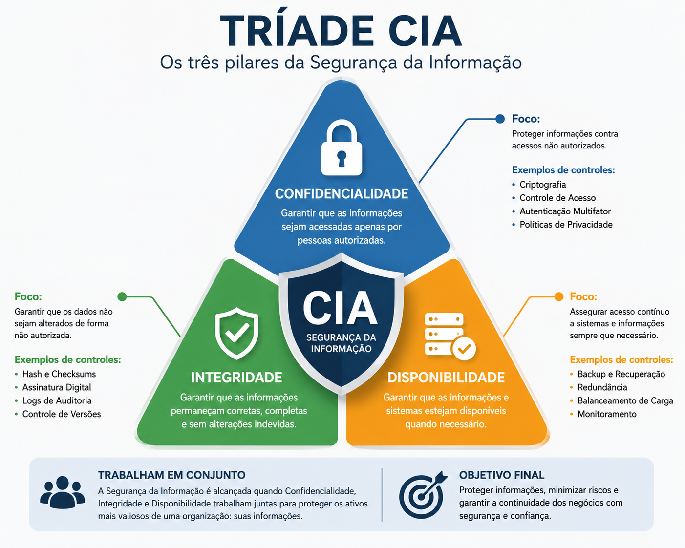
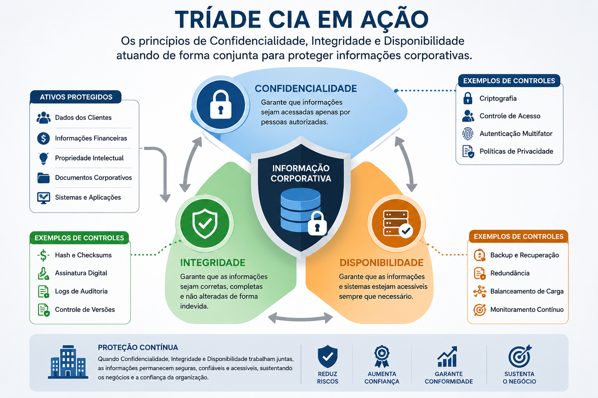
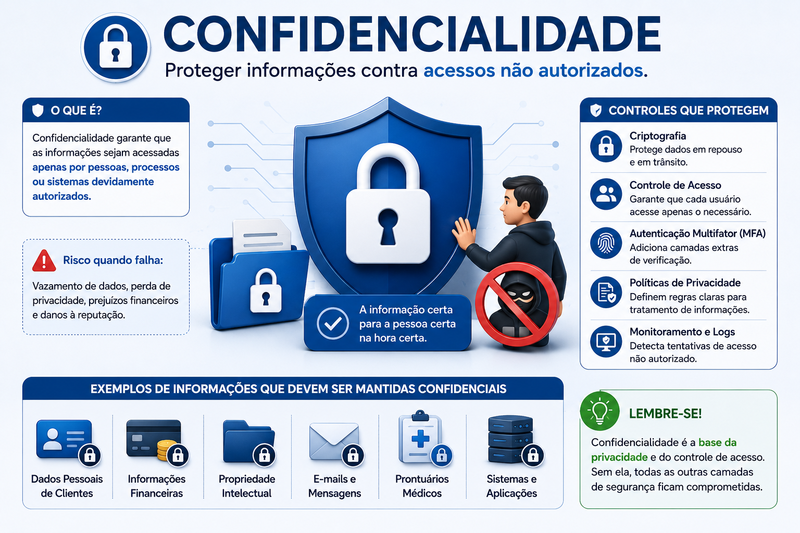
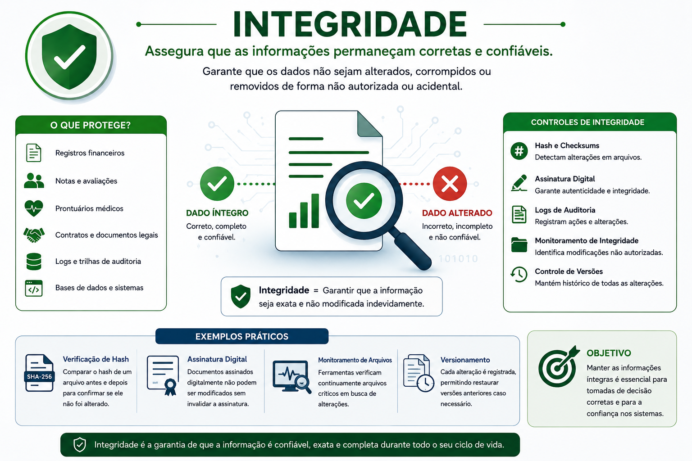
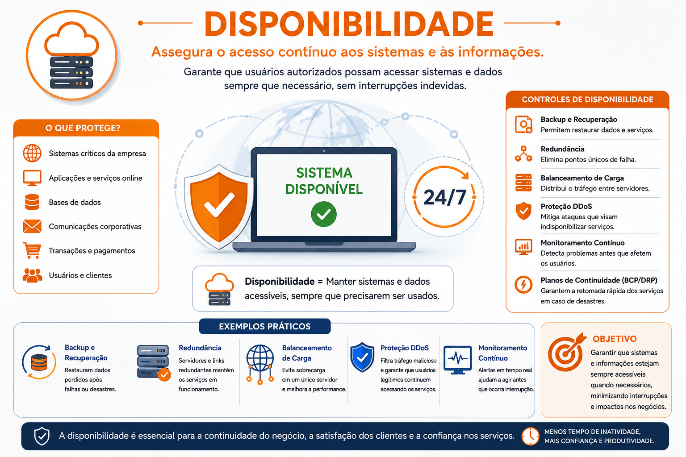
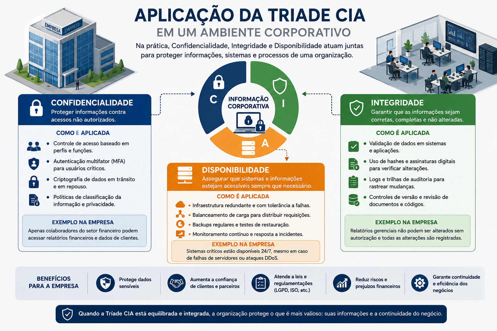
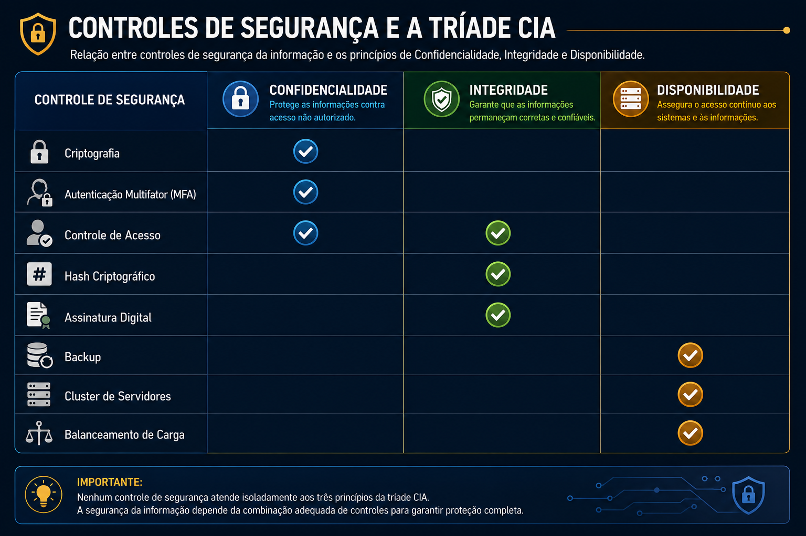
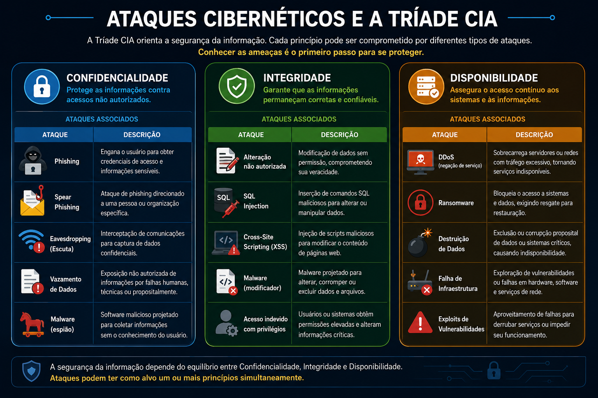

📋 Guia Rápido
Integridade
Disponibilidade
📖 Resumo Executivo
Imagine que uma empresa armazene todas as informações de seus clientes em um banco de dados corporativo.
Esses dados incluem documentos pessoais, contratos, informações financeiras, histórico de compras e registros internos. Agora imagine três situações distintas.
- Um invasor consegue visualizar informações sigilosas.
- Os registros financeiros são alterados indevidamente.
- O servidor fica indisponível durante todo o expediente.
Embora sejam problemas diferentes, todos representam falhas em princípios fundamentais da Segurança da Informação.
Como proteger as informações contra acessos indevidos, alterações não autorizadas e indisponibilidade dos serviços?
A resposta está na Tríade CIA, um modelo utilizado mundialmente como referência para o desenvolvimento de políticas, processos e controles de segurança. Esses três pilares servem de base para normas internacionais, auditorias, programas de governança e arquiteturas de proteção utilizadas por organizações públicas e privadas.
Compreender os três princípios fundamentais da Segurança da Informação e entender como eles orientam a implementação de controles técnicos e administrativos capazes de proteger ativos digitais contra diferentes tipos de ameaças.
🖼 Figura de Referência
A ilustração abaixo apresenta a Tríade CIA e a relação entre seus três pilares.

🔺 O que é a Tríade CIA?
A Tríade CIA é um modelo conceitual utilizado para orientar a implementação de controles de Segurança da Informação. Seu nome é formado pelas iniciais dos três princípios fundamentais que sustentam esse modelo:
- Confidencialidade (Confidentiality)
- Integridade (Integrity)
- Disponibilidade (Availability)
Embora esses conceitos sejam apresentados separadamente para facilitar o estudo, eles trabalham de forma integrada. Uma falha em qualquer um dos pilares pode comprometer a segurança de uma organização, mesmo que os demais estejam corretamente implementados.
A Segurança da Informação não consiste apenas em impedir invasões. Seu principal objetivo é garantir que as informações permaneçam protegidas, íntegras e disponíveis durante todo o seu ciclo de vida.
📊 Visão Geral da Tríade CIA
Os três pilares da Tríade CIA podem ser representados pelo diagrama abaixo.
🔒 Confidencialidade
Protege informações contra acessos não autorizados.
🛡 Integridade
Garante que os dados permaneçam corretos, completos e sem alterações indevidas.
⚡ Disponibilidade
Assegura que sistemas e informações possam ser acessados quando necessários.
🏢 Onde a Tríade CIA é aplicada?
A Tríade CIA é utilizada como referência no desenvolvimento de políticas, procedimentos e controles de segurança adotados por empresas privadas, órgãos públicos e instituições financeiras.
🖼 Aplicação da Tríade CIA
O exemplo abaixo apresenta uma visão simplificada de como os três pilares atuam sobre uma mesma informação.

A Tríade CIA é considerada um dos conceitos mais importantes da Segurança da Informação e serve como base para diversas normas e frameworks, incluindo a ISO/IEC 27001, o NIST Cybersecurity Framework e o CIS Controls.
🔒 Confidencialidade (Confidentiality)
A Confidencialidade tem como objetivo garantir que as informações sejam acessadas apenas por pessoas, processos ou sistemas devidamente autorizados. Em outras palavras, esse princípio protege os dados contra divulgação, cópia ou utilização indevida.
Sempre que uma informação confidencial é exposta sem autorização, ocorre uma violação de segurança que pode gerar prejuízos financeiros, danos à reputação da organização e até mesmo implicações legais.

Exemplos de informações que exigem confidencialidade:
- Senhas e credenciais de acesso.
- Dados bancários.
- Informações pessoais de clientes.
- Projetos e propriedade intelectual.
- Prontuários médicos.
🛡 Integridade (Integrity)
A Integridade garante que as informações permaneçam corretas, completas e consistentes durante todo o seu ciclo de vida. Os dados não devem ser alterados sem autorização, seja de forma acidental ou maliciosa.
Imagine um sistema bancário onde o saldo de uma conta seja alterado por um invasor. Mesmo que ninguém tenha acessado indevidamente a informação, ela deixou de ser confiável. Nesse caso, ocorreu uma violação da integridade.

Exemplos de informações cuja integridade é essencial:
- Contratos eletrônicos.
- Registros financeiros.
- Prontuários médicos.
- Logs de auditoria.
- Documentos jurídicos.
⚡ Disponibilidade (Availability)
A Disponibilidade garante que usuários autorizados possam acessar informações e serviços sempre que necessário. Não basta proteger os dados; eles também precisam estar acessíveis no momento certo.
Ataques de negação de serviço (DoS e DDoS), falhas de hardware, problemas elétricos e desastres naturais podem comprometer esse princípio caso não existam mecanismos adequados de redundância e recuperação.

Exemplos de recursos que dependem da disponibilidade:
- Internet Banking.
- Serviços em nuvem.
- Correio eletrônico corporativo.
- Prontuários eletrônicos.
- Sistemas ERP.
É comum associar Segurança da Informação apenas à confidencialidade. Na prática, um ambiente só pode ser considerado seguro quando os três princípios da Tríade CIA são preservados de forma equilibrada. Um sistema extremamente protegido, mas indisponível para os usuários, continua representando um problema de segurança.
🏢 Estudo de Caso – Aplicando a Tríade CIA em uma Empresa
Imagine uma empresa de comércio eletrônico que realiza milhares de transações diariamente. Seus sistemas armazenam informações pessoais dos clientes, processam pagamentos, controlam o estoque e gerenciam pedidos. Nesse ambiente, os três princípios da Tríade CIA precisam atuar de forma integrada para garantir a segurança das operações.

Caso qualquer um desses princípios seja comprometido, a empresa poderá enfrentar prejuízos financeiros, perda de confiança dos clientes e interrupção das operações.
📊 Relacionando Controles de Segurança à Tríade CIA
Os mecanismos de segurança implementados nas organizações normalmente protegem um ou mais pilares da Tríade CIA.

Observe que alguns controles atuam em mais de um princípio. O controle de acesso, por exemplo, impede que usuários não autorizados visualizem dados (confidencialidade) e também evita alterações indevidas (integridade).
🔍 A Tríade CIA no Dia a Dia
Mesmo fora do ambiente corporativo, utilizamos diariamente tecnologias baseadas na Tríade CIA.
• Utilize autenticação multifator sempre que possível.
• Classifique as informações conforme seu nível de sensibilidade.
• Implemente políticas de controle de acesso baseadas no menor privilégio.
• Realize backups periódicos e testes de recuperação.
• Monitore continuamente eventos de segurança.
• Mantenha sistemas e aplicações sempre atualizados.
• Capacite os usuários sobre boas práticas de segurança.
🖼 Relação entre Ataques e a Tríade CIA
A figura abaixo ilustra como diferentes ameaças podem impactar cada um dos três pilares da Segurança da Informação.

Embora cada ataque possua características específicas, todos eles procuram comprometer um ou mais princípios da Tríade CIA. É justamente por isso que esse modelo continua sendo utilizado como referência na construção de estratégias modernas de Segurança da Informação.
A Tríade CIA não representa apenas um conceito teórico. Ela orienta a criação de políticas de segurança, a implementação de controles técnicos, a gestão de riscos e a resposta a incidentes em organizações de todos os portes.
Sempre que um novo controle de segurança for estudado, pergunte-se:
Qual princípio da Tríade CIA este controle protege?
Essa simples pergunta facilitará a compreensão de praticamente todos os conceitos abordados em Segurança da Informação.
📚 O que aprendemos?
- O conceito da Tríade CIA.
- O significado de Confidencialidade.
- O papel da Integridade na proteção das informações.
- A importância da Disponibilidade para a continuidade dos serviços.
- Como diferentes controles de segurança protegem cada princípio.
- A relação entre ataques cibernéticos e a Tríade CIA.
- A importância desse modelo para normas e frameworks internacionais.
🚀 Próximo Capítulo
Agora que conhecemos os três pilares fundamentais da Segurança da Informação, iniciaremos o estudo detalhado de cada um deles.
O próximo capítulo abordará exclusivamente a Confidencialidade, explorando os mecanismos utilizados para proteger informações contra acessos não autorizados.
Serão apresentados conceitos como autenticação, autorização, criptografia, controle de acesso, autenticação multifator (MFA), gestão de identidades e boas práticas para proteção de dados sensíveis.
➡ Ler o próximo capítulo
➡ 🔺 Tríade CIA
⬜ 🔒 Confidencialidade
⬜ 🛡 Integridade
⬜ ⚡ Disponibilidade
⬜ 🔐 Criptografia
⬜ 👥 Controle de Acesso
⬜ 🆔 Autenticação
⬜ ✔ Autorização
⬜ 🔑 Autenticação Multifator (MFA)
⬜ 🏛 Identity and Access Management (IAM)
⬜ ☁ Zero Trust
⬜ 🔐 Privileged Access Management (PAM)
⬜ 🌐 Active Directory e Microsoft Entra ID
⬜ 🔑 Single Sign-On e Federação de Identidade